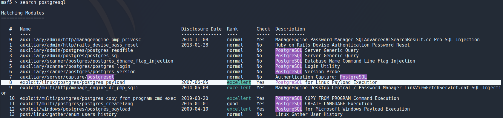

This is a report for the penetration testing cource taught by Tero Karvinen
Metasploit
Before starting this assigment i started reading “
” book which provided lots of great tricks and ideas for me to look into so if i mention a book i read something in it will be this one unless say otherwise. To start this i make sure i got posgress installed and up to date with “sudo apt install postgress” after which i start the service by running "systemctl start postgresql". Using “ss -ltn” showed that postgers was up and listening but it was open for the world to see so i used “sudo ufw deny 5432” to close this so it only listens on localhost just in case. Now simply running “sudo msfdb intit” to start the database and “msfconsole” to actually start metasploit. Initially metasploit was giving me some errors that didnt seem to affect the actual usability and after looking into it online it seems like the errors were irrelevant but annoying so i "ruby -W0 /usr/bin/msfconsole" to ignore the warnings for now.In metasploit using db_status we can make sure that we are connected to our database.
I opened up metasploitable 2 for this and checked its ip address on it. To scan metasploitable i used “db_nmap -sC -sV -oN outfile 10.0.2.9” and got loads of results out of it.
Running this in nmap has the benefit of being able to run “services” to list all the results or specify the target which you want to see the results for with the commands seen when running “services -h”.
To save these results just in case i used “db_export outfile” which creates a nice xml file for later. I assume i can also import this file into metasploit if i want to come back to this some other time or on another device but i will look into these features later when i'll scan the Hack the box network and will have much more data to play around with. For metasploitable i decided to target the postgresql port because i knew from previous testing that i can get a meterpreter shell by exploiting it which i want to play around with. Running “search postgresql” found lots of diffrent exploits for me to use most interesting being the one described as “PostgreSQL for Linux Payload Execution”.

To select this exploit i used “use 8” to select the exploit number 8 from the previous search as i learned from another student in class. Using “options” command to look at options there were a few things to look at. Since this is a simpe dummy target for metasploit practise it is safe to assume that the credentials and database name are left at default so the only thing to change is the target ip which i set with "set rhosts 10.0.2.9".
To actually use this exploit it was as easy as typing “exploit” in the terminal and pressing enter. Literally that was the command.
Now this was a nice and easy way of getting a meterpreter shell mut i wanted to get one another way as shown in the book i mentioned in the beginning. For this example i decided to background my meterpreter which can be done with the “background” command or CTRL + Z. I searched exploits for the ftp port running vsftpd and chose the one described as backdoor command execution with the same commands previously mentioned. I only had to set the rhost and run the exploit to get a simple root shell on the target.
To create a payload i used msfvenom with -p to specify the payload as x86 meterpreter reverse tcp and specified my ip and port to listen on as seen in the image. Using -f i specified an elf file and -b to set null byte as a bad character as suggested in the book for a stable shell and lastly writing this payload to an outfile.
To get my payload to the target i setup a python http server on port 80 as seen in the image and on the target used wget to download this payload after navigating to the /tmp directory.
To start a listener in metasploit i ran "use /exploit/multi/handler" and set the payload to x86 meterpreter reverce tcp as seen in the image. Next i set my ip and port then specified the payload that i created with msfvenom earlier and ran this listener as a job in the background with “exploit -j”
To actually get the shell i set my payload as an executable on the target and run it in the background with “./shell &” and instantly saw a meterpreter session open. I had to go back to fix something so sessions id is inconsistant in the images but by running “sessions” you can view running sessions and running “sessions <id>” will connect to that session.
Next part i wanted to play around with is persistence. One of the ways to achieve this is to use sshkey_persistence which adds my public key to every users authorized_keys file so i can login to any user without a password using ssh.
I chose sshkey_persistence same way i did with the previous exploits but this time had some diffrent options to set. For this one i had to specify the session to use this on so i chose session 5 which was my root meterpreter shell. There was also an option that creates .ssh folders for users that dont have one already but that doesnt seem to be working very well because it added the .ssh folder to many places it shouldnt. Either way ill keep this in mind if i ever want to use this for a more real target and move on since it did work.
To actually use my key to login into metasploitable i got a warning because of the file permissions for the key so i had to run “chmod 600 keyfile” so give myself write and read permissions to it while giving others none which let me login using ssh without a problem.
I did also try a privelege escalation script in metasploit which is handy but many of the checks didnt work and i would rather just stick with linpeas and linenum for now.
One other thing i tried was hashdump which dumps all the hashes from /etc/shadow and saves them to a file so it needs root access and is easy to do manually but its nice to be able to do this in metasploit.
Scanning HTB
To scan the htb network i started by creating a new workspace for the results and started a normal nmap scan with the -sn option to not do a port scan and -oA to output to a file.
Taking that output file, grepping for the targets that are up and using awk to grab just the ip addresses then directing that into a targets file for the next scan.
Now that i have the target ip addresses in a file conviniently i can use that to do a thorough scan only on the targets i want by specifying the targets file with -iL.
After the scan finished in about 15 minutes i got most of what i need nicely in metasploit. Some things i tried is searching the results for webservers by running the services command with -p 80 to specify port and -u to only show services that are up.
I wanted to try using this database for something and decided to try the dir_scan module which is supposed to bruteforce directories which ended up being very underwhelming. I started by choosing the module as i've done before but this time instead of choosing the target with “set rhosts” i used “hosts -R” to set the targets as the ip addresses from my db_nmap scan.
I tried running this module as a background job with “exploit -j” to not fill the screen with output assuming that it will tell me when its done but while it ran in the background it kept notifying me when it got a 404 response. Also the lack of options for file extensions, no possibility to choose an outfile and no way to tell it that 404 response isnt as exciting as it seems to think although no-one is stopping me from making changes to the module so maybe someday ill end up looking into it because the option to have it run against all the targets in the nmap scan seems useful for going against the whole network.
To conclude this part i wanted to make sure that the db_import does what i think it does. After exporting the database with "db_export outfile" i created a new workspace and verified that i have nothing in the current database. Next i used “db_import dbfile” to import the database and it worked all nice and as expected so i can keep the db file for later if i need to use it on another device or whatever the case may be.
Escalate My Priveleges
To try to hack something besides metasploitable i downloaded a machine from vulnhub called Escalate My Privileges[0] and opened up metasploit. I started by creating a new workspace for this target and ran an nmap scan against it.
Looking at the results first thing that really pops out is the /phpbash.php that is disallowed in the robots.txt.
Navigating to /phpbash.php i see a nice shell running which is a bit more convinient that i expected but i will try to get myself a meterpreter shell anyway.
To create a payload i used msfvenom again but using x64 because the target is 64-bit as i verified with “uname -a”.
Again i went to setup my listener by using exploit/multi/handler but for whatever reason metasploit doesnt let me change the settings until i start the listener which i then have to kill to start a listener with the correct options. Keep in mind that “jobs -K” kills ALL jobs but since i only had this one running it was safe to use. After setting the payload to 64-bit meterpreter and setting host/port i ran the listener as a background job with “exploit -j”.
After a while of trying to get my payload to work i realized that my user (apache) doesnt actually have bash. I dont understand the whole /sbin/nologin thing so ill have to read a bit more on that at some point but for now i went back to create a php payload with msfvenom because i think that should work just fine.
After setting up an http server with "sudo python3 -m http.server 80" and navigating to my payload on the website i get a nice and easy meterpreter session. After looking around a bit i found some credentials in armours home directory.
The users password is md5 sum of “rootroot1” so to get that i echoed it to md5sum as seen in the image.
After that logging in to user “armour” was simple but now i want to upgrade to a better meterpreter session. To do that i went back to create my 64-bit payload again and backgrounding my shell with CTRL + Z. I setup my python server again but for some reason using wget to download the file set the user to root so i couldnt make it an executable it for some reason so i guess ill have to figure that one later as well. To work around this i just used curl to get the content of the file and directed that to a file, set it to an executable and ran it to get a meterpreter session. Now that i think about it maybe using cat to read the file and piping it to bash could have worked as well.
After i got the user i tried running “sudo -l” to see if i can tun something as root and oh boy is this a practise machine. Apparently i can run a ton of things as root presumably this is for practising a variety of privelege escalations but for now i just ran “sudo /bin/bash” and got root.
After getting root i wanted to take a peek at some files out of curiosity and found loads of credentials in .mysql_history file and using mysql to look at the database i didnt find anything that the history file didnt already have. Also i threw the root hash into hashcat and cracked the password (rootroot1). I could play around with persistence and all that stuff but deadlines are a thing so i think ill have to come back to this some other time.